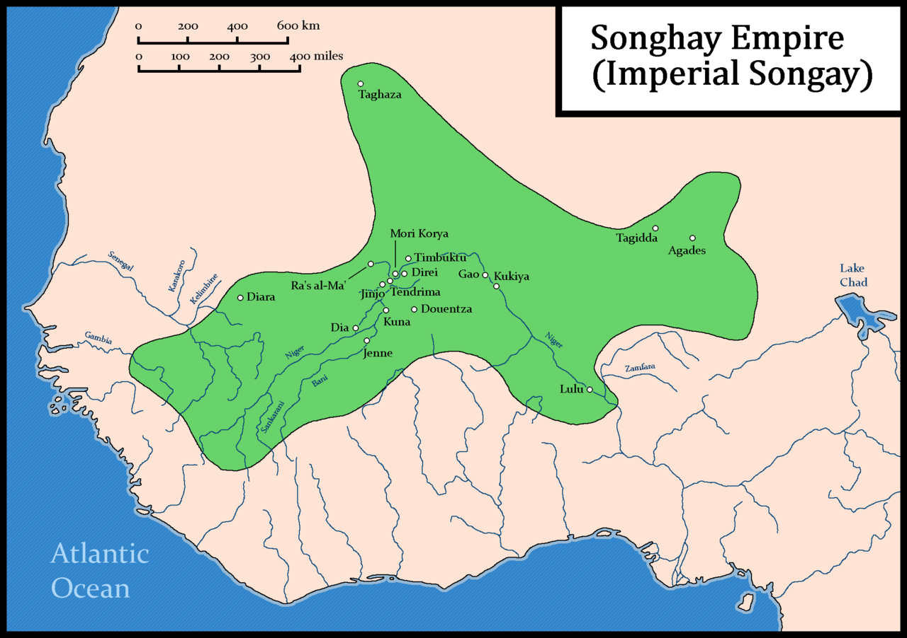
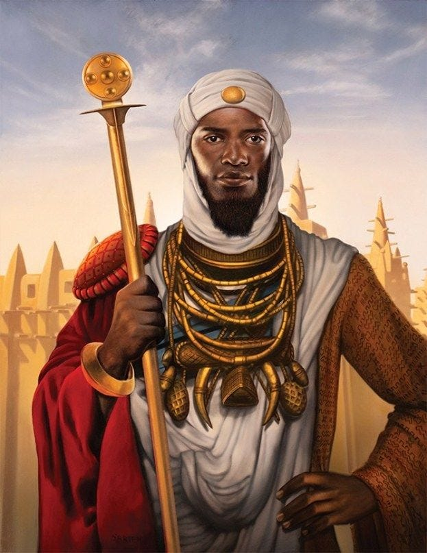

INTRODUCTION

The Songhai Empire, one of the most powerful states in West Africa's history, rose to prominence in the
15th century. Spanning from the Niger River to the Sahara Desert, the empire thrived due to its strategic
location along important trade routes and its control over key economic resources, such as gold and salt.
Internal strife and external pressures, including conflicts with neighboring states and European
colonial incursions, eventually led to the decline of the empire by the late 16th century. Despite its
eventual collapse, the legacy of the Songhai Empire endures, shaping the cultural, political, and economic
landscape of West Africa and leaving a lasting impact on the region's history.
THE FOUNDING DYNASTIES: THE DECLINE OF MALI
A combination of factors can be attributed to the rise of the Songhai Empire, including strategic
leadership, military prowess, and control over lucrative trade routes. The empire emerged as a significant
power in West Africa during the late 14th and early 15th centuries under the leadership of Sunni Ali, who is
considered one of its founding figures.

Circa 1492, Sonni Ali; pictured left, ruled the realm of Songhai at its height.
The Songhai Empire's rise was also facilitated by its control over key trade routes, particularly those
connecting the Saharan trade networks with the interior regions of West Africa. By dominating trade in
commodities such as gold, salt, and slaves, the Songhai Empire amassed wealth and resources, further
strengthening its position as a regional power. Additionally, the empire's adoption of Islam as a unifying
religion under Sunni Ali's successor, Askia Muhammad, helped to solidify its political and cultural
identity, attracting scholars, traders, and artisans from across the Islamic world.
Overall, the Songhai Empire's rise was characterized by effective leadership, military expansion, and
control over vital trade routes, all of which contributed to its emergence as one of the most formidable
states in West African history.
The overthrow of the Mali Empire by the Songhai Empire was a gradual process that unfolded over several
decades, marked by shifting power dynamics, military conflicts, and internal strife within the region. One
significant turning point occurred during the reign of Sunni Ali, the founder of the Songhai Empire, who
initiated a series of military campaigns aimed at expanding Songhai's territory and influence.
Sunni Ali's conquests brought him into direct conflict with the Mali Empire, which was then in a state of
decline following the reign of Mansa Musa. Sunni Ali seized upon this opportunity and launched military
expeditions against Mali-controlled territories, gradually weakening Mali's grip on its western frontier.
The decisive blow to the Mali Empire came with the reign of Askia Muhammad, who overthrew the remaining
vestiges of Mali authority and consolidated Songhai's control over the region. Askia Muhammad's military
successes, coupled with his administrative reforms and promotion of Islam, further solidified Songhai's
dominance in West Africa.
The fall of the Mali Empire and the rise of the Songhai Empire marked a significant shift in regional power
dynamics, with Songhai emerging as the preeminent state in the western Sahel. The downfall of Mali allowed
Songhai to assert its authority over the lucrative trans-Saharan trade routes and establish itself as a
major political and economic force in the region.

Pages:
2
3